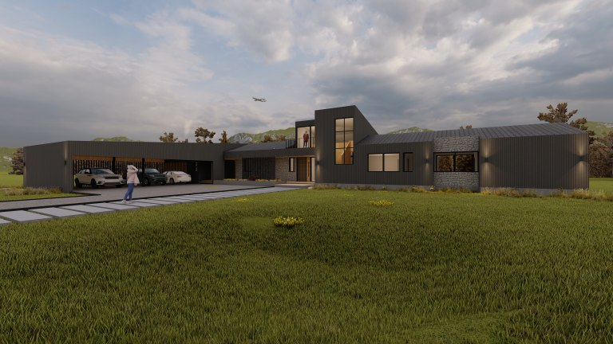
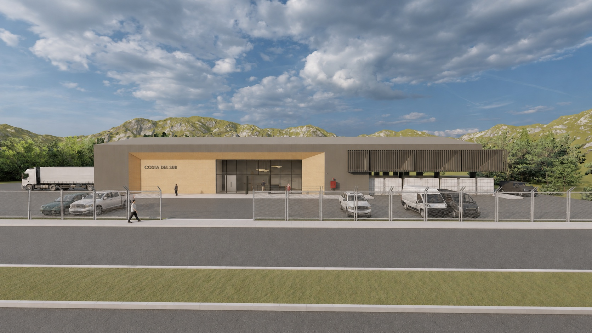
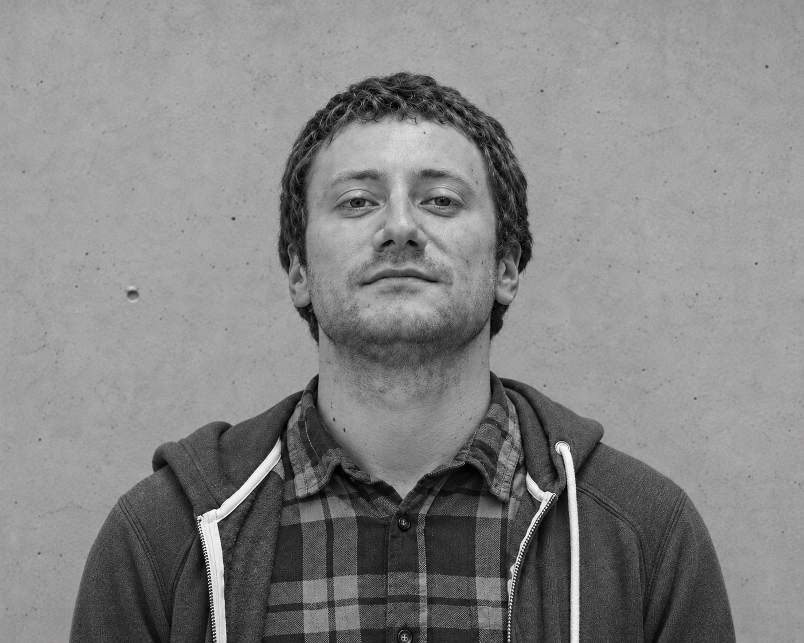

OBRAS Y PROYECTOSQRAFT ARQUITECTOS
01Casa
Casa
CV
CASA CV

En Qraft Arquitectos, nuestra visión es transformar el sur de Chile con arquitectura sostenible e innovadora, en armonía con el entorno natural. Lideramos en diseño ecológico, respetando la biodiversidad y cultura local, colaborando con comunidades para un desarrollo urbano responsable.
Conocer al equipoDistintos lugares.
Una mirada.



ARQUITECTO UNIVERSIDAD MAYOR, SANTIAGO
FUNDADOR QRAFT ARQUITECTOS

ARQUITECTO UNIVERSIDAD MAYOR
SOCIO